If you want to see tutorial in a separate web browswer window click here.
Data Types
Up until this point we have been working with a text variable. A variable stores a specific data type. Text is considered a String data type. Read more about data types in the GameMaker manual.
Lets create a new room and look at some more data types. Right click on the Rooms title in the Resources menu. Select Create Room then change the name to rm_data_types and drag this to the first room in the list. This is important as GameMaker loads the first room in this list. We now want to load this new room.

Lets now create another object that will be responsible for controlling all elements unique to this level.  Right click on Object in the Resources menu, then select Create Object and call it obj_data_types_controller.
Right click on Object in the Resources menu, then select Create Object and call it obj_data_types_controller.

Now in this newly created object  left click on the Add Event button and add a Draw | Draw event:
left click on the Add Event button and add a Draw | Draw event:

Now lets take a look at the newly created script. The first line is special and has unique section that has /// @description . This tells the IDE that this is the title of this script and what follows it shows up in the Events list window. Properly naming this makes it easier to find code that you wrote previously.
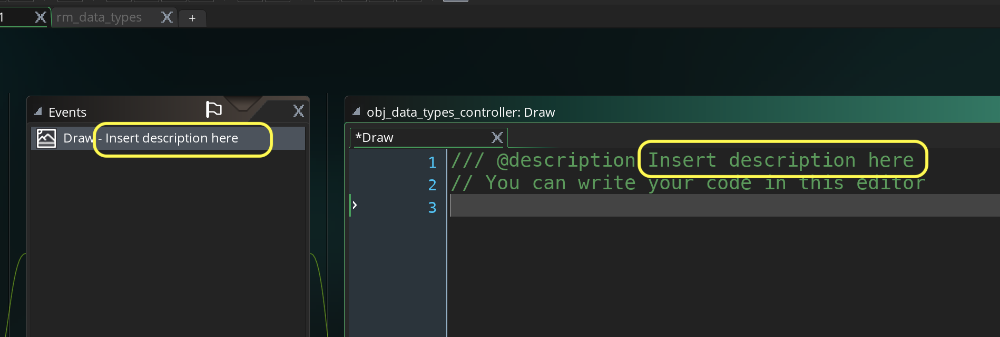
Now lets go to this newly created draw event and update the description and the first line of help to demonstrate what we will do next. Type this, press Save and see that what follows /// @description now shows up in the Events window:
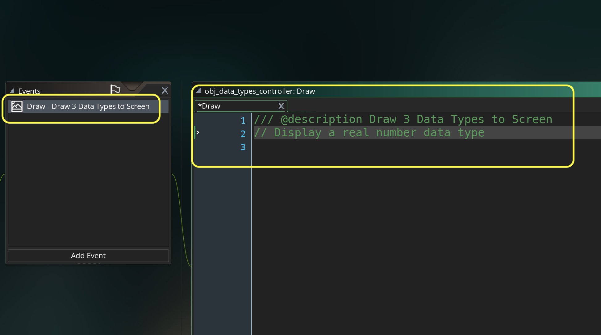
Lets reopen obj_hello_world_text and adjust the help text to have /// @description at the beginning of the first line. Now what follows /// @description now shows up in the Events window:
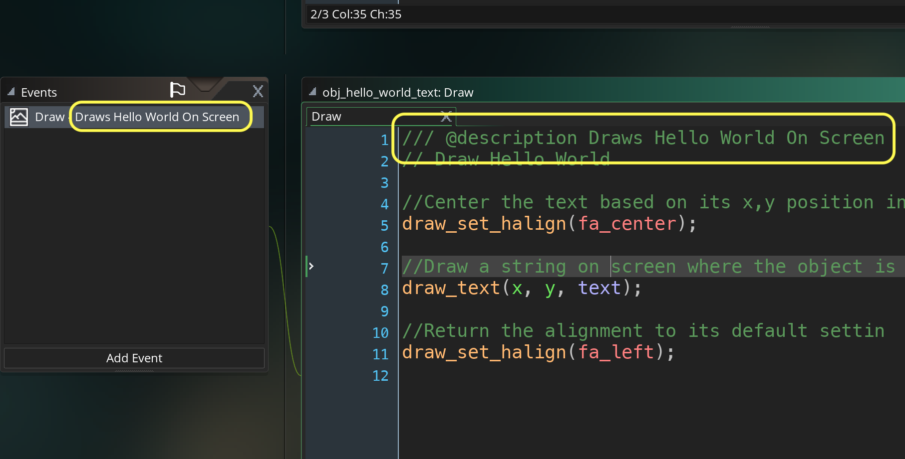
Go back to obj_data_types_controller and press the  VariableDefinitions button. Add a variable named age and set the value to your age (mine is 51). Leave it as type Real. Add another variable named line_height and set the Value to 32. We will use this to space each line by 32 pixels. Leave this as a Real number.
VariableDefinitions button. Add a variable named age and set the value to your age (mine is 51). Leave it as type Real. Add another variable named line_height and set the Value to 32. We will use this to space each line by 32 pixels. Leave this as a Real number.
" Real numbers are any value that is not a string, nor any of the other possible data types. So, 124, 45639.566546456, 0, -45.5 etc... are all examples of real numbers. All real numbers are stored as double-precision floating point values (even seemingly integer values), so you may experience slight rounding errors when dealing with these." - GameMaker Manual
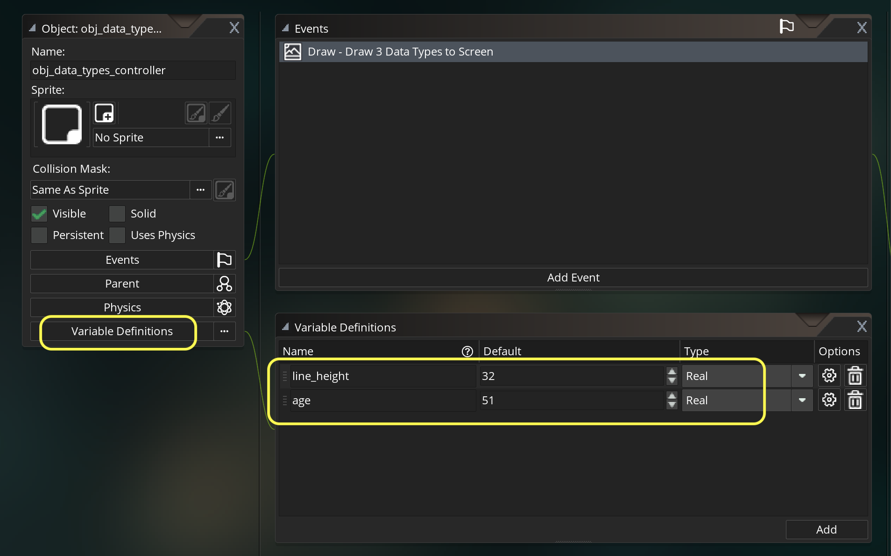
Drag an instance of obj_data_types_controller to the edge of the new rm_data_types room. You can put it on the outside of the room as it is just there to run code, we will not use its position on screen.
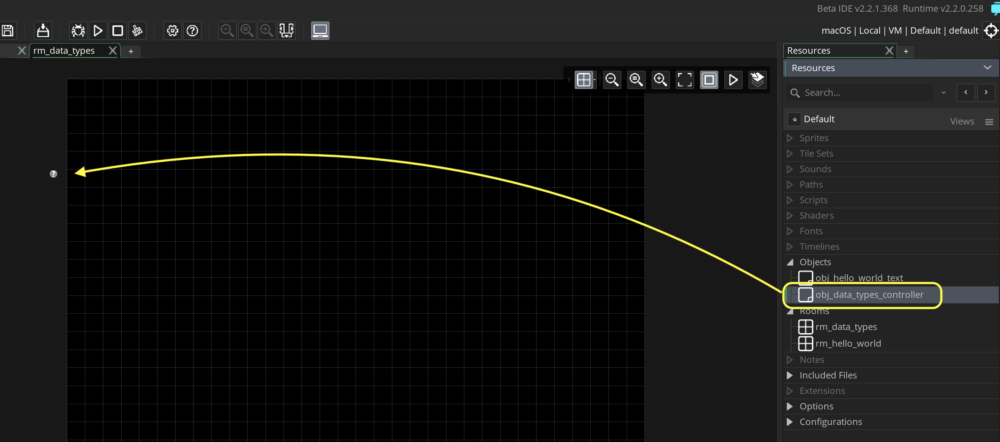
Go to the obj_data_types_controller Draw event script window. Start by aligning the text to the horizontal center. Then draw the text and don't use the built in x and y variables. Since we placed it off screen we will position the text where we want it. We will use room_width times 0.5 (same as dividing the room_width variable by half). We set the y value at our current line_height variable. Then we reset the horizontal alignment to its default. Type the following into your draw script:
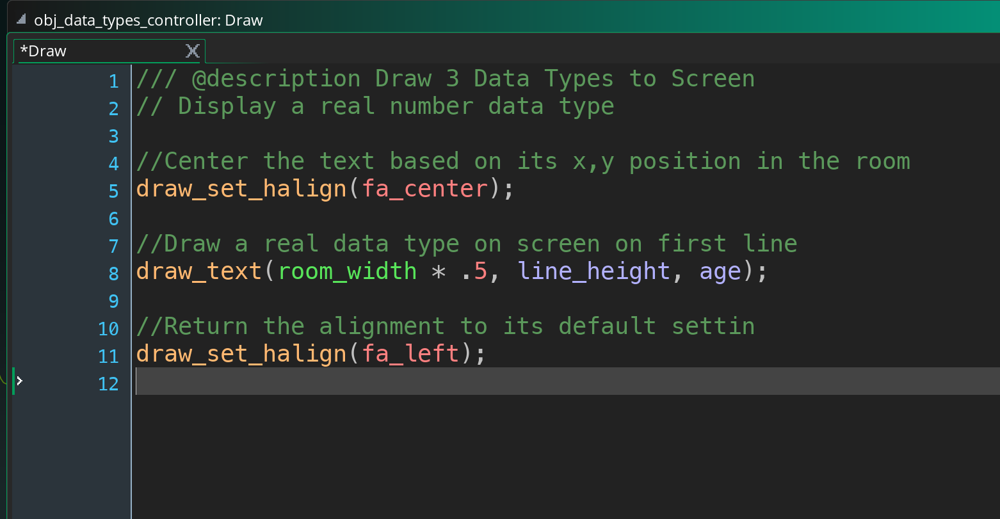
Now run the game by pressing the  Play Button in the top menu bar to launch the game. You should see the age you entered printed in the top center of the screen:
Play Button in the top menu bar to launch the game. You should see the age you entered printed in the top center of the screen:
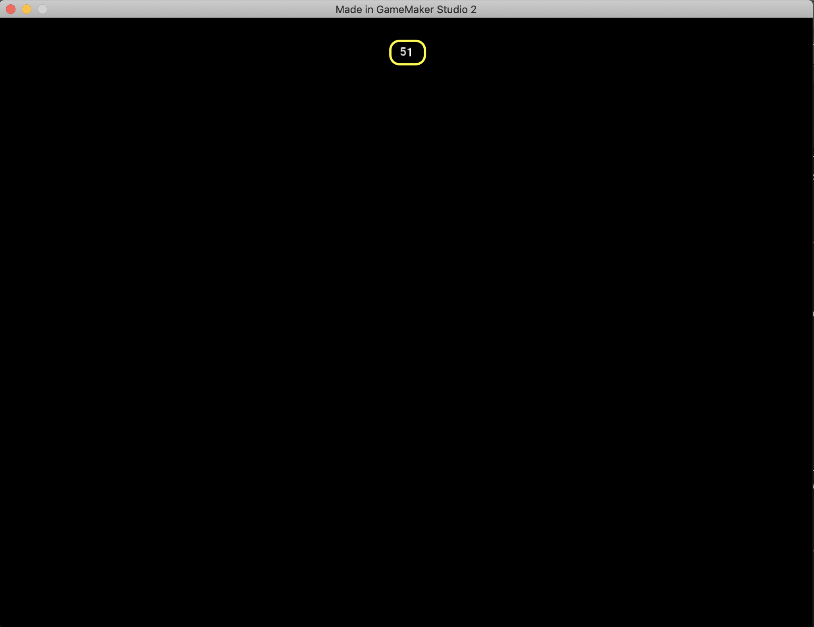
Now we can do other things with real numbers, we can perform mathematical operations on them. So we can evaluate: 51 + 20 * 2. Remember the order of operations, as this will evaluate as 51 + (20 * 2). So lets make this change and add a second line to our on screen text. We advance the y value by multiplying line_height by 2. This will move it down one line. We will also not use the real number 51, we will use the variable age. Add another comment and line like so:
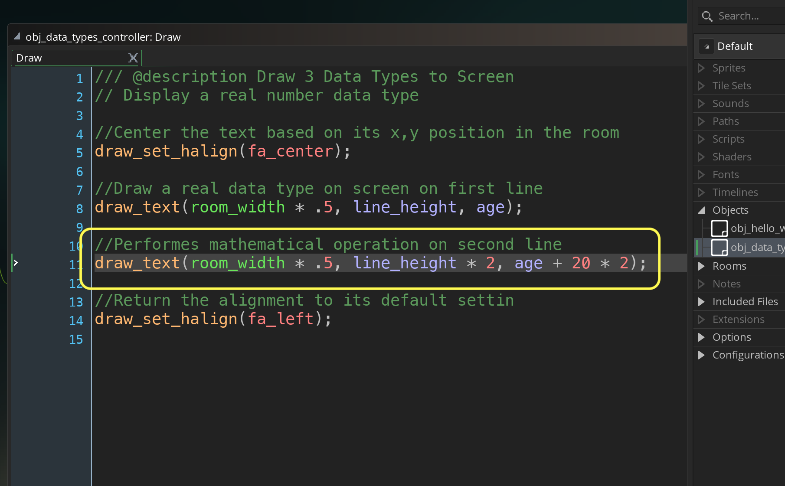
Now run the game by pressing the  Play Button in the top menu bar to launch the game. You should see the second line that clearly state 91. This means that the order of operations behaved as we expected.
Play Button in the top menu bar to launch the game. You should see the second line that clearly state 91. This means that the order of operations behaved as we expected.
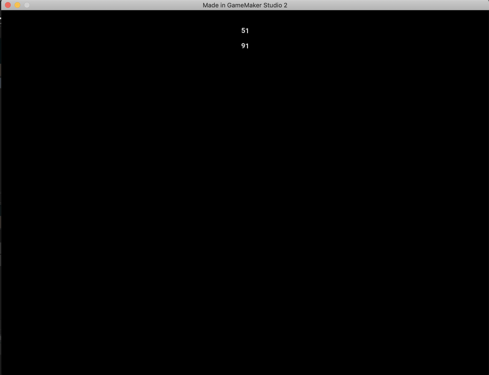
Lets clean up a few things. The spacing is a bit too big for the font that is default on my computer. Go to the Variable Definitions tab and change the Value to 22.
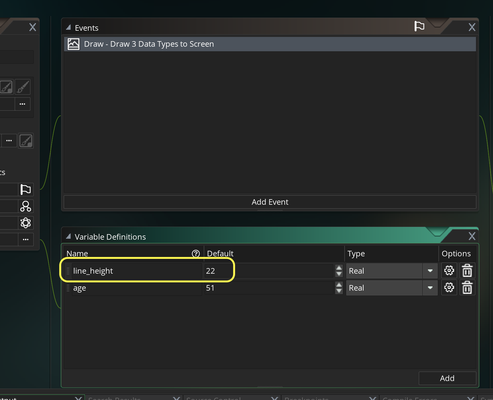
Go back to the Draw event script and put brackets around the multiplication. Even though this makes no difference, it will help you or others to better understand what you mean. There is no downside to being more explicit, the compiler will generate the same end result. It is just a clearer expression of your intent.
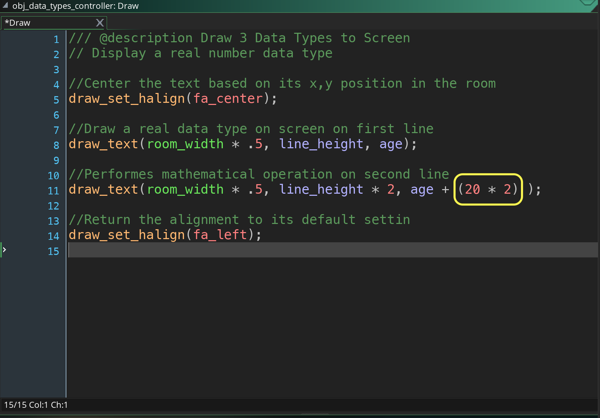
Now run the game by pressing the  Play Button in the top menu bar to launch the game. You should see a tighter spacing that looks a bit better. Notice that the answer is still 91 so the brackets did not change anything in the execution.
Play Button in the top menu bar to launch the game. You should see a tighter spacing that looks a bit better. Notice that the answer is still 91 so the brackets did not change anything in the execution.
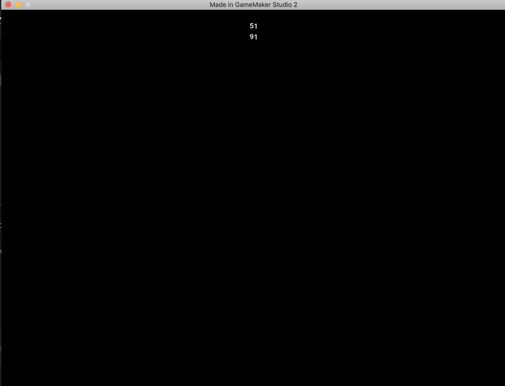
The final data type we will look at for now is called a Boolean. A boolean resolves to either 1 (true) or 0 (false). It is preferable to use the words true and false when refering intead of 0 and 1. But if you print a boolean value we will only see the number. In GameMaker any real number above .5 will resolve to true and any number less will be false. Now we can't seleft a boolean type we need to cast a real number to a boolean. We do this by typing (bool)real_number_to_convert. So lets add two more lines and print the boolean result of 3 and -300.
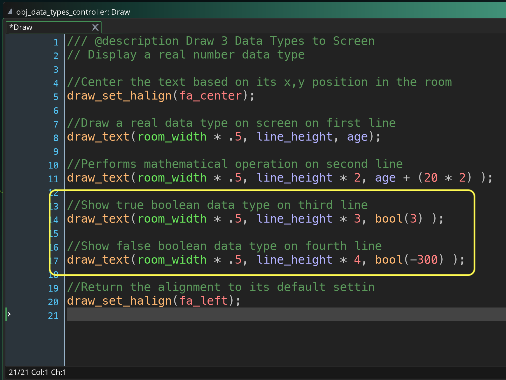
Now run the game by pressing the  Play Button in the top menu bar to launch the game. You should see a tighter spacing that looks a bit better. Did you see what you expected. According to the above rules the 3 resolved to true and the -300 resolved to false.
Play Button in the top menu bar to launch the game. You should see a tighter spacing that looks a bit better. Did you see what you expected. According to the above rules the 3 resolved to true and the -300 resolved to false.
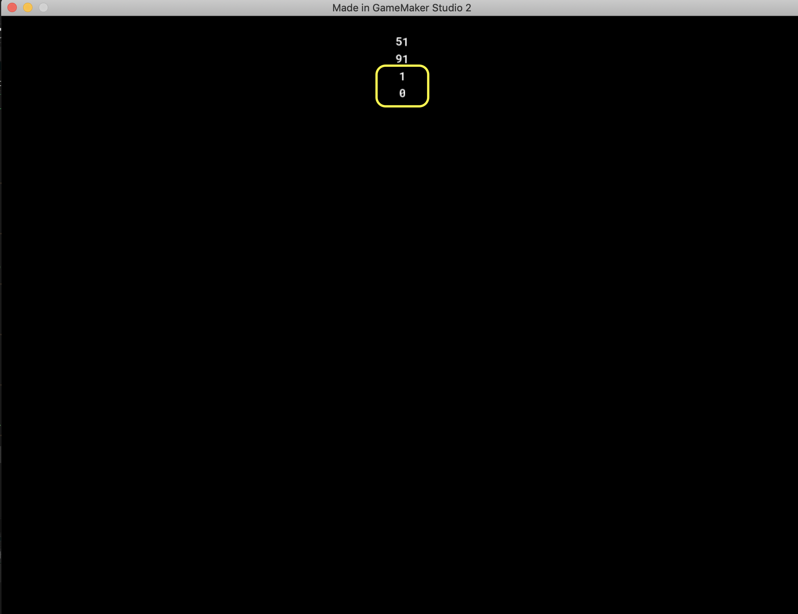
Previously we were able to add two real numbers together to perform a mathematical operation. We can also combine strings together. Instead of a mathematical operation it performs a concatonation. It puts both strings together as a longer string.
Lets add a fifth line to the printing and concatonate some strings. Lets add two more Variable Definitions to the obj_data_types_controller. We will add one to hold a first and last name and make them both Strings.
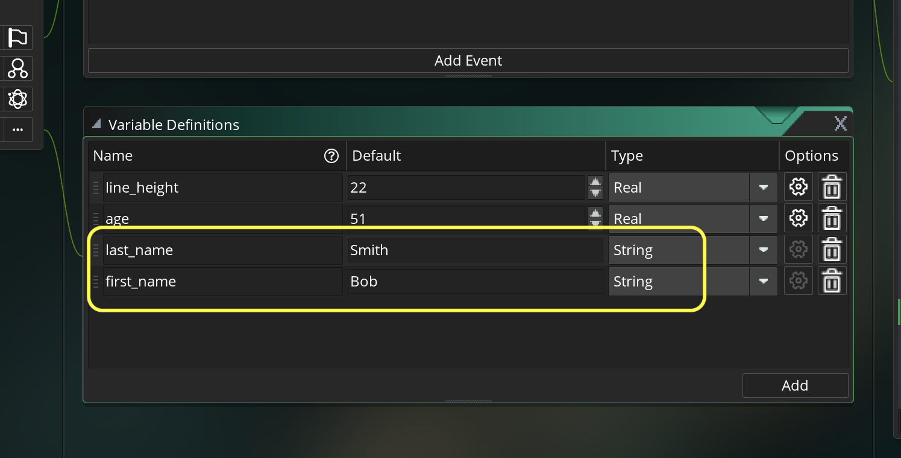
Now lets string a sentence together. We can concatonate string varialbes with strings. We also need spaces between words. So we can add "Hello " + first_name + " " + last_name + "!" as a fifth line. Add the following 5th text string to our Draw script:
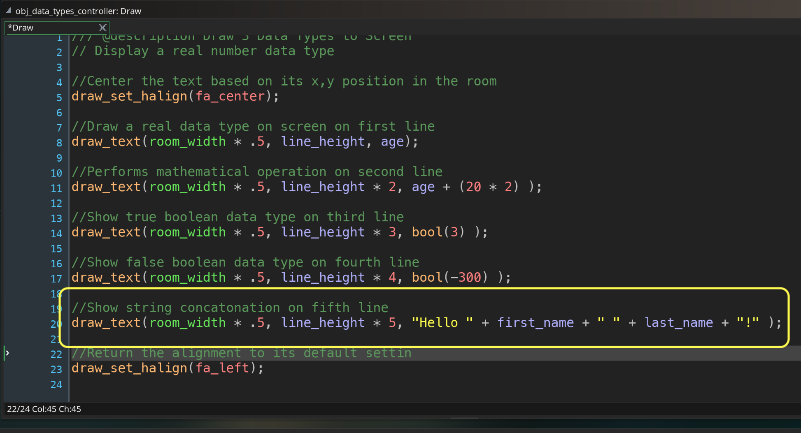
Now run the game by pressing the  Play Button in the top menu bar to launch the game. You should see an entire sentence print on the fifth line as it combines all the strings together.
Play Button in the top menu bar to launch the game. You should see an entire sentence print on the fifth line as it combines all the strings together.

So a real number + a real number will perform an addition. A string + a string will perform a concatonation. What if we add a string to a real number together. Lets give it a try. Go back to the first line we printed and add the string and real number "I am " + age + " years old."
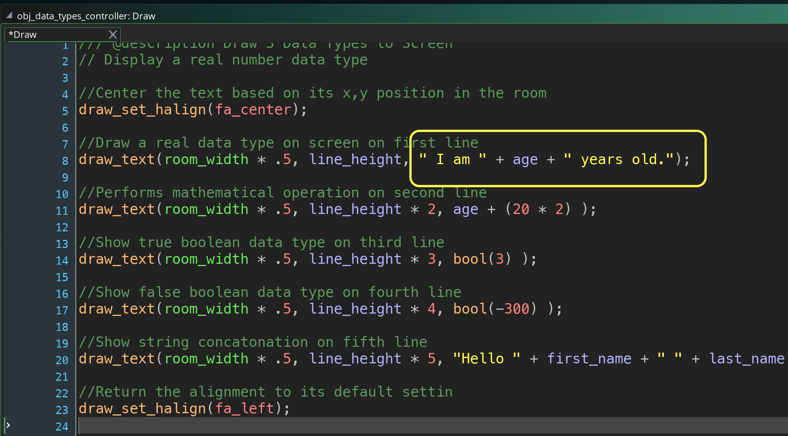
Now run the game by pressing the  Play Button in the top menu bar to launch the game. Woops we now get our first run time error. What does this mean? This means it compiles succesfully but when that line is run in game (it is run right away) it asserts to an error. The error tells us which script it is in and the event type (Draw Event obj_data_types_controller). The error message "DoAdd" isn't very helpful. Essentially GameMaker can't handle adding a String and a Real number together. But there is a solution.
Play Button in the top menu bar to launch the game. Woops we now get our first run time error. What does this mean? This means it compiles succesfully but when that line is run in game (it is run right away) it asserts to an error. The error tells us which script it is in and the event type (Draw Event obj_data_types_controller). The error message "DoAdd" isn't very helpful. Essentially GameMaker can't handle adding a String and a Real number together. But there is a solution.
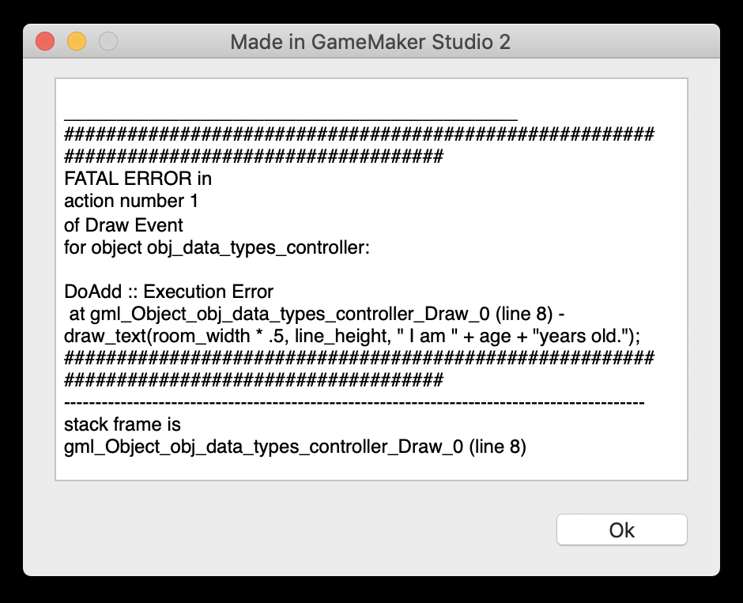
Just as we cast a real number to a boolean we can cast a Real Number to a String. What casting does is changes from one data type to another. There is a function called string() in which it casts the value to a string data type. Edit the scipt and pass the age real number variable as an argument to the string() function like so:
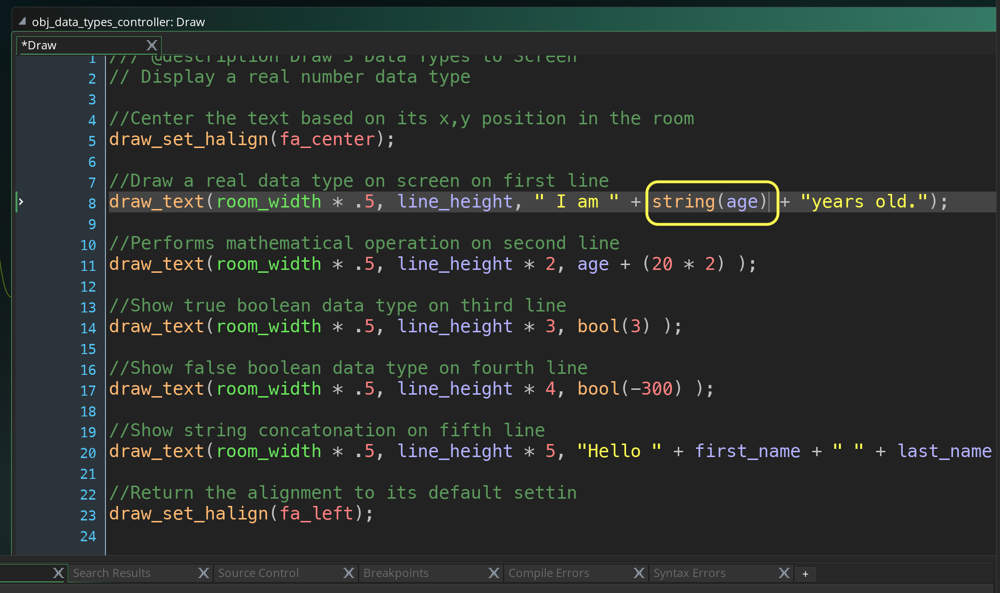
Now run the game by pressing the  Play Button in the top menu bar to launch the game. It works fine as we are back to concatonating multiple strings together because of the cast.
Play Button in the top menu bar to launch the game. It works fine as we are back to concatonating multiple strings together because of the cast.
Now inside the cast we can still perform arithmetic operations on the real numbers and it will perform this before casting it to a string. On the second line surround the mathematical operation with a string(age + (20 * 2)) like so:
//Performs mathematical operation on second line
draw_text(room_width * .5, line_height * 2, "In 40 years I will be " + string(age + (20 * 2)) + "." );
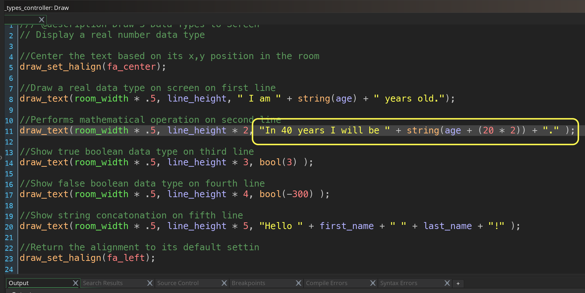
Now run the game by pressing the  Play Button in the top menu bar to launch the game. Now it concatonates the two strings but only after it has performed the arithmetic operations:
Play Button in the top menu bar to launch the game. Now it concatonates the two strings but only after it has performed the arithmetic operations:
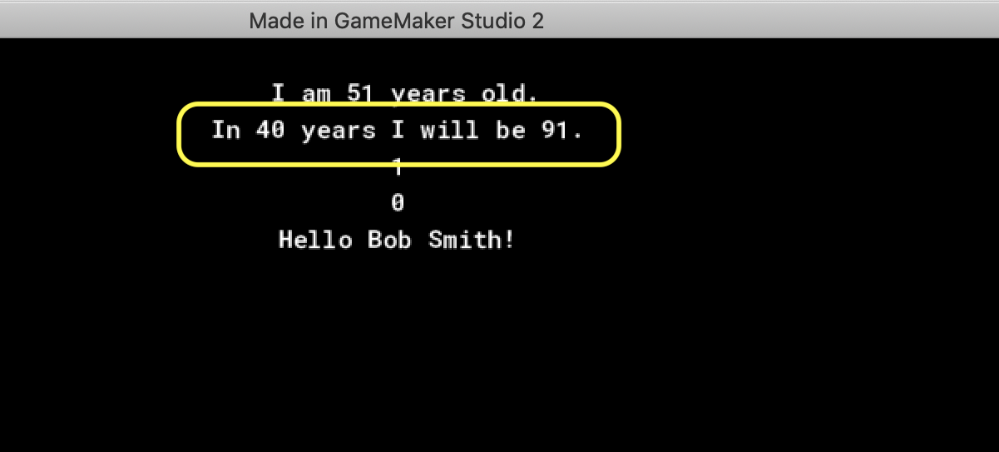
Even cooler is that we can nest casts. So we can cast the (bool)real_number to a string. Lets make a sentence out of our boolean comparisons and double cast:
"3 in boolean resolves to: " + string(bool(3))
"-300 in boolean resolves to: " + string(bool(-300))
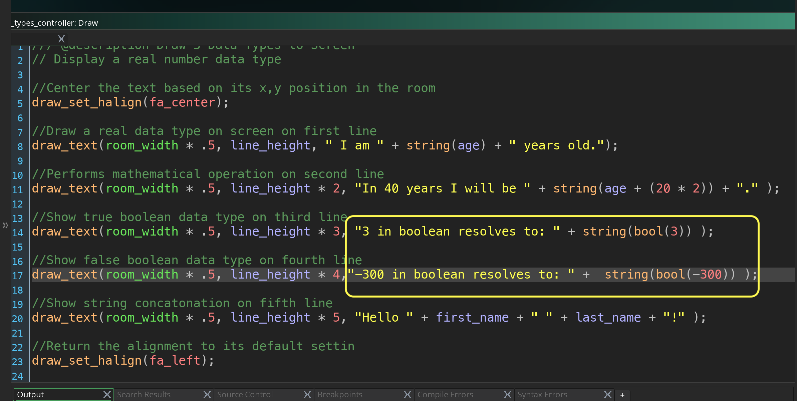
Now run the game by pressing the  Play Button in the top menu bar to launch the game. All the lines are now concatonating strings that are cast from either booleans or real numbers.
Play Button in the top menu bar to launch the game. All the lines are now concatonating strings that are cast from either booleans or real numbers.
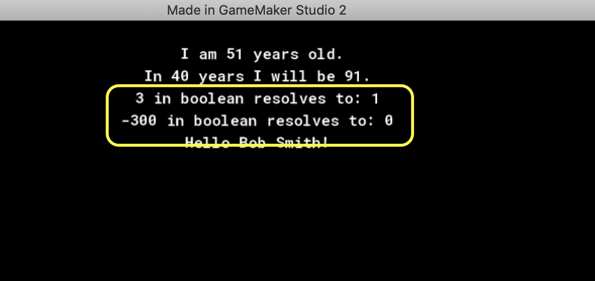
In the next chapter we will look at basic logic, positioning in level and dealing with errors. We will start with if statements.